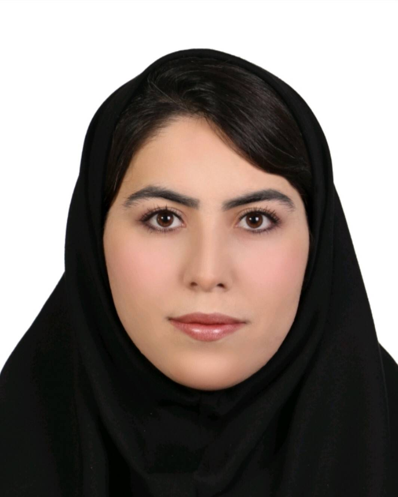

دانشجوی مهندسی فناوری برنامهسازی وب | WPT
کارشناس روانشناسی عمومی | Psy
نوروتراپیست | Neurotherapist
ICDL
حسابدار عمومی | General Accountant
📍 محل فعالیت: تهران
💻 امکان همکاری: حضوری و دورکاری
🎂 متولد: همدان، ایران
📧 Email:
aydasoltanisani@gmail.com
من آیدا سلطانی ثانی هستم. دانشجوی رشته مهندسی فناوری برنامهسازی وب | WPT و کارشناس روانشناسی عمومی | Psy با تجربه فعالیت حرفهای در حوزه درمان، نوروتراپی و محیطهای تخصصی سلامت.
I am Ayda Soltani Sani, a Web Programming Technology (WPT) student, with a Bachelor's Degree in General Psychology (Psy) and professional experience in healthcare, neurotherapy and specialized clinical environments.
متولد همدان، ایران
Born in Hamedan, Iran
ساکن تهران
Based in Tehran
دارای بیش از ۶ سال و ۸ ماه سابقه فعالیت حرفهای و ۶ سال و ۸ ماه سابقه بیمه تأمین اجتماعی در حوزه درمان.
دارای تجربه در زمینه: نوروتراپی، QEEG، EEG، ECG / EKG، نوروفیدبک، tDCS، تستهای روانشناسی و مشاوره روانشناختی.
در حال توسعه مهارتها در زمینه برنامهسازی وب، HTML، CSS، JavaScript، Python و Django، همچنین ICDL و حسابداری عمومی هستم.
Web Programming Technology
دانشگاه علمی کاربردی انفورماتیک ایران
University of Applied Science and Technology - Informatics
شروع: ۱۴۰۴
Started: 2025
در حال تحصیل
Currently Studying
Bachelor's Degree in General Psychology
دانشگاه آزاد اسلامی، واحد اسلامشهر
Islamic Azad University, Islamshahr Branch
شروع: ۱۳۹۶
Started: 2017
پایان: ۱۴۰۰
Completed: 2021
ارزیابی QEEG، طراحی پروتکلهای نوروفیدبک، اجرای جلسات tDCS، بررسی روند پیشرفت مراجع.
ارائه خدمات مشاوره روانشناختی، فعالیت با گروههای آسیبپذیر، اجرای برنامههای حمایت روانی.
بیش از ۶ سال و ۸ ماه سابقه فعالیت حرفهای
در محیطهای درمانی و بالینی.
سابقه بیمه تأمین اجتماعی:
۶ سال و ۸ ماه
Social Security Insurance:
6 Years and 8 Months